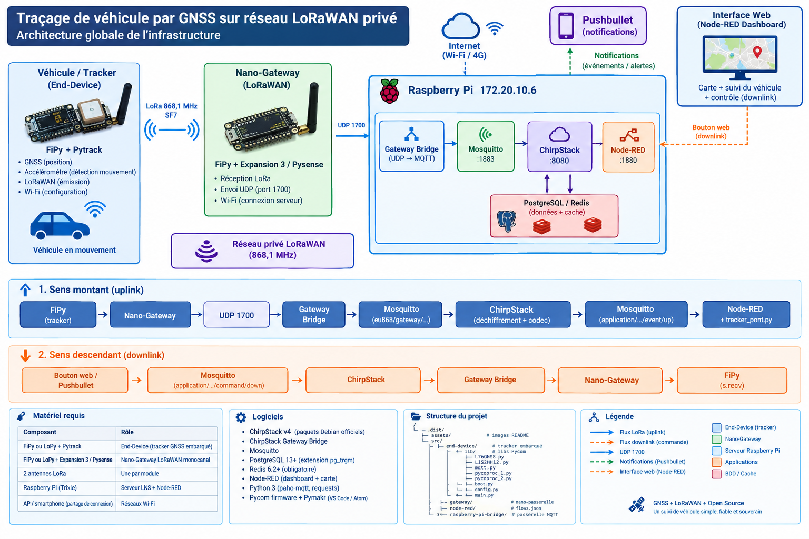
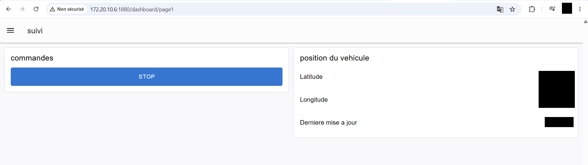
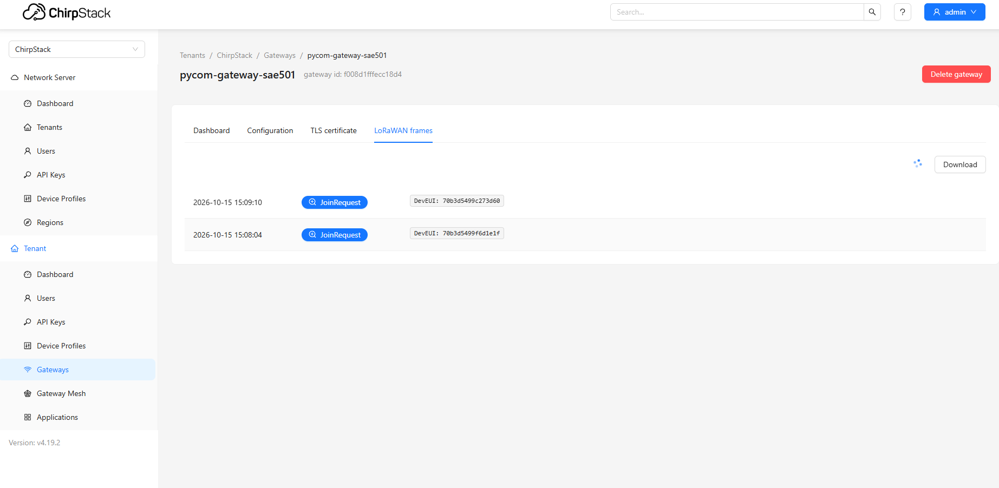
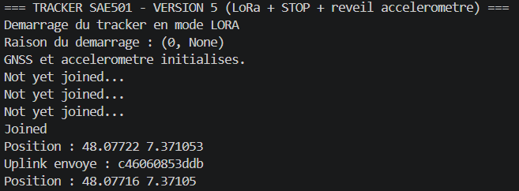
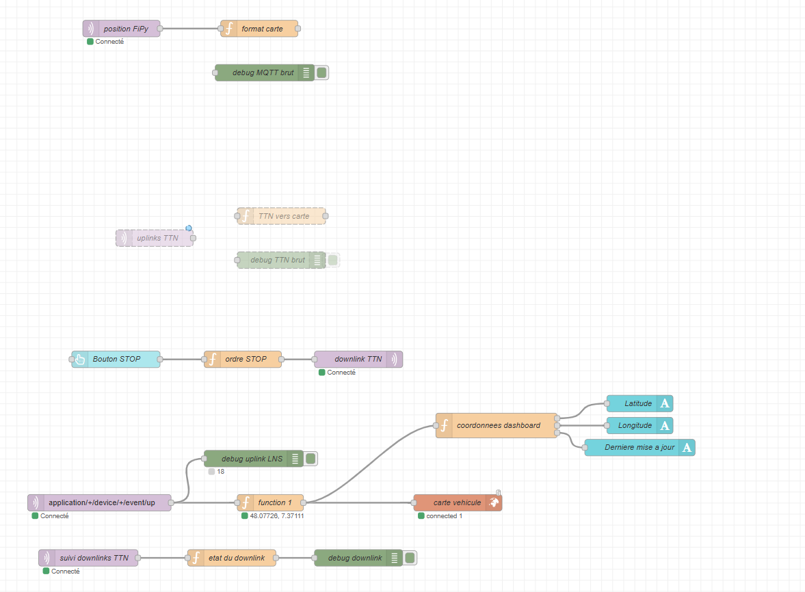
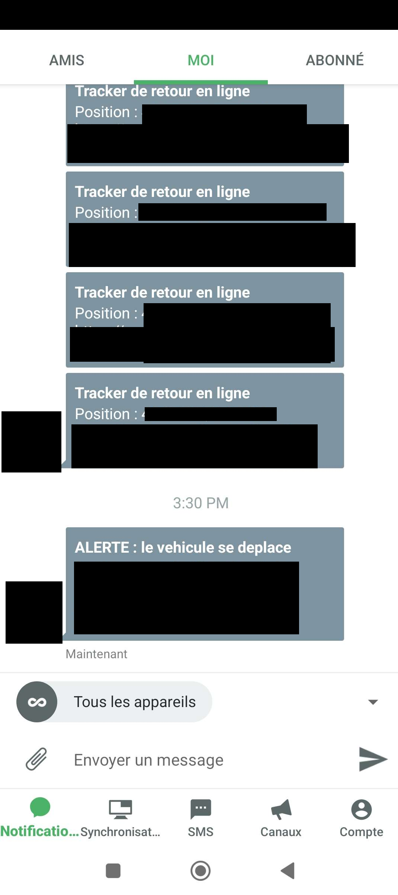

Traçage de véhicule par GNSS sur réseau LoRaWAN privé
Suivi en temps réel d'un véhicule via un réseau LoRaWAN privé auto-hébergé (ChirpStack), avec visualisation cartographique et mise en veille à distance.
- Cadre
- BUT R&T
- Équipe
- Projet d'équipe
- Matériel
- LoPy - PyTrack - Nano-gateway (Un autre LoPy) - Raspberry Pi
- Statut
- Terminé
01En résumé
Objectif
Suivre la position GNSS d'un véhicule via un réseau LoRaWAN privé auto-hébergé et la visualiser sur une carte web.
Ma contribution
Déploiement complet du LNS ChirpStack sur Raspberry Pi, configuration de la nano-passerelle et du tracker, intégration Node-RED et service de communication pont avec l'API Pushbullet.
Résultat
Chaîne fonctionnelle de bout en bout : tracking GNSS, uplinks LoRaWAN, dashboard cartographique et mise en veille à distance par downlink et 20/20 en note.
02Le projet
Le projet consiste à suivre en temps réel la position GNSS d'un véhicule en transmettant ses coordonnées via un réseau LoRaWAN privé. Plutôt que de dépendre de The Things Network (TTN), un LoraWAN Network Server (LNS) ChirpStack v4 est déployé en auto-hébergé sur un Raspberry Pi. Le tracker est un système embarqué à faible consommation qui ne s'active que lorsque le véhicule bouge (détection par accéléromètre) et peut être mis en veille à distance par un ordre descendant (downlink).
- Tracker embarqué : LoPy + PyTrack (GNSS L76, accéléromètre LIS2HH12), envoi périodique des coordonnées en LoRaWAN OTAA.
- Nano-gateway LoRaWAN : LoPy + PyTrack (GNSS L76, accéléromètre LIS2HH12), monocanal EU868 (868,1 MHz / SF7), envoi UDP Semtech vers le LNS.
- LNS ChirpStack v4 : serveur auto-hébergé sur Raspberry Pi (Mosquitto, PostgreSQL, Redis, Gateway Bridge).
- Node-RED : réception MQTT, décodage du payload, dashboard cartographique et envoi du downlink STOP.
- Notifications mobiles : Service Python qui relaie chaque position vers Pushbullet.
03Recette de validation
Le système a été validé de bout en bout par une recette couvrant chaque brique de la chaîne.
| # | Vérification | Critère de succès |
|---|---|---|
| 1 | Services système |
chirpstack, gateway-bridge,
mosquitto, redis et
postgresql tous active (running)
|
| 2 | Nano-passerelle |
Lignes Pull ack régulières en console,
Last seen récent dans ChirpStack
|
| 3 | Join OTAA |
JoinRequest puis JoinAccept dans
les frames, Joined sur la console tracker
|
| 4 | Uplink GNSS |
Événement up avec
object: {lat, lon} décodé par le codec
JavaScript
|
| 5 | Broker MQTT |
mosquitto_sub -t 'application/#' affiche le
JSON de l'uplink
|
| 6 | Dashboard Node-RED | La voiture se déplace sur la carte, les coordonnées se mettent à jour |
| 7 | Downlink STOP |
txack dans Node-RED, arrêt des uplinks, reprise
après mouvement (accéléromètre)
|
| 8 | Notifications | Pushbullet reçoit chaque position puis le message « Tracker en veille » |
04Démarche
- Déploiement du socle serveur : installation de Mosquitto, Redis, PostgreSQL et ChirpStack v4 sur Raspberry Pi (dépôt officiel Debian).
-
Configuration réseau : Gateway Bridge avec préfixe
eu868, Mosquitto en écoute sur0.0.0.0:1883. -
Adaptation EU868 monocanal : désactivation ADR et
suppression des
extra_channelspour coller à la nano-passerelle Pycom. - Déclaration : gateway, device profile avec codec JavaScript, application, device en OTAA avec génération d'AppKey.
- Programmation du tracker : LoPy + Pytrack, lecture GNSS et accéléromètre, envoi périodique des coordonnées.
- Intégration Node-RED : réception MQTT, décodage, carte et downlink STOP avec anti-rebond de 5 min.
- Notifications mobiles : script Python paho-mqtt + API Pushbullet.
- Tests : recette complète (join, uplinks, downlink, veille, reprise).
05Technologies
- ChirpStack v4
- LNS LoRaWAN auto-hébergé
- LoRaWAN (EU868)
- Protocole de communication longue portée
- Raspberry Pi
- Serveur LNS + Mosquitto + Node-RED
- FiPy / LoPy + Pytrack
- End-device tracker embarqué (GNSS, accéléromètre)
- Nano-gateway Pycom
- Passerelle LoRaWAN monocanal
- Mosquitto
- Broker MQTT local
- PostgreSQL / Redis
- Stockage et cache ChirpStack
- Node-RED
- Dashboard cartographique et traitement des flux
- Python (Pycom, paho-mqtt)
- Programmation embarquée et script Pushbullet
06Galerie






07Compétences BUT mobilisées (Apprentissage Critique)
AC31.01Concevoir un projet de réseau informatique
d'une entreprise en intégrant les problématiques de haute
disponibilité, de QoS, de sécurité et de supervision
Conception de l'architecture réseau complète du système de
tracking : tracker --> nano-gateway --> LNS ChirpStack -->
broker MQTT --> dashboard. Supervision assurée via
systemctl status, journalctl, page
Gateways de ChirpStack (Last seen) et onglet
Events du device.
AC31.02Réaliser la documentation technique de ce
projet
Rédaction d'un README technique complet : architecture, prérequis matériels et logiciels, procédure d'installation pas à pas (ChirpStack, Gateway Bridge, Mosquitto, PostgreSQL, Redis), configuration, déclaration des devices, recette de validation et table de dépannage.
AC31.03Réaliser une maquette de démonstration du
projet
Maquette physique fonctionnelle : tracker LoPy + Pytrack, nano-passerelle LoRaWAN Pycom, Raspberry Pi hébergeant le LNS et le dashboard Node-RED. Démonstration du tracking GNSS en temps réel et du downlink de mise en veille.
AC31.04Défendre/argumenter un projet
Argumentation des choix techniques : auto-hébergement de
ChirpStack v4 plutôt que TTN (maîtrise des données,
indépendance), adaptation EU868 monocanal (désactivation ADR,
suppression des extra_channels) justifiée par les
limites de la nano-passerelle Pycom.
AC32.01Déployer un système de communication pour
l'entreprise
Déploiement de la chaîne de communication complète : LoRaWAN EU868 en OTAA entre tracker et LNS, passerelle UDP Semtech 1700, intégration MQTT entre ChirpStack et Node-RED, notifications HTTP via l'API Pushbullet.
AC32.02Déployer un réseau d'accès sans fil pour
le réseau d'entreprise en intégrant les enjeux de la sécurité
Déploiement d'un réseau d'accès sans fil LPWAN privé (LoRaWAN 868 MHz) avec activation OTAA et AppKey pour l'authentification du device, gestion des clés par device et séparation des flux entre tracker, gateway, LNS et dashboard.
AC33.04Déployer et maintenir une solution
informatique
Installation, configuration et maintenance d'une pile logicielle complète sur Raspberry Pi (ChirpStack, Gateway Bridge, Mosquitto, PostgreSQL, Redis, Node-RED), avec diagnostic des pannes (join, downlink, canal radio, broker MQTT).
AC33.05S'informer sur les évolutions et les
nouveautés technologiques
Veille sur l'écosystème LoRaWAN : comparaison TTN vs LNS auto-hébergé, adoption de ChirpStack v4 (dernière version majeure), connaissance des contraintes des nano-passerelles monocanal et de leur non-conformité à la spécification complète.
AC33.06Sécuriser l'environnement numérique d'une
application
Sécurisation de la chaîne : activation OTAA avec génération d'AppKey par device, changement du mot de passe admin ChirpStack par défaut, isolation de Mosquitto derrière un réseau maîtrisé, et attention portée à la file de downlinks (anti-rebond 5 min, flush queue).
08Bilan
Ce que j'en retiens
La maîtrise d'une de LoRaWAN et de Lora, la mise en place d'un LNS, l'administration du système global, le fonctionnement de la plateforme TheThingsNetwork, la gestion d'équipe et la communication technique. Finalement, La satisfaction de voir un projet complexe fonctionner de bout en bout sans faute.
Avec du recul
La nano-passerelle monocanal est une contrainte forte, non conforme à la spécification LoRaWAN complète et déconseillée en production. En conditions réelles, une passerelle multi-canaux serait nécessaire. La gestion du downlink via ChirpStack (file d'attente, flush queue, anti-rebond) mériterait aussi un système de confirmation plus robuste côté device.